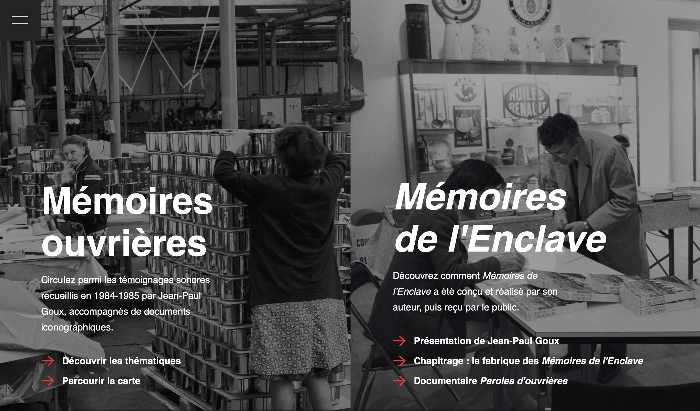

Mes Projets
En 3e année de BUT
En stage
Web documentaire - Mémoire ouvrière du pays de Montbéliard
Ce webdocumentaire, vise à valoriser un patrimoine culturel en se concentrant sur l'œuvre de Jean-Paul Goux. Il rend accessibles divers documents multimédias.
Projet iOS - Restaurant
Application iOS développée avec SwiftUI et intégrée à une API Node.js. Elle permet aux utilisateurs de gérer leur compte client, de consulter les menus disponibles et de passer des commandes directement depuis l’application.
En 2e année de BUT
En stage

Inscription - Judo de Vesoul
Application développée pour la gestion des inscriptions au club de Judo de Vesoul, utilisant Next.js et React.js pour une interface utilisateur dynamique et performante.
En 2e année de BTS
En stage
Accueil Client chez Eurydice
Site permettant à l'entreprise Eurydice d'enregistrer un nouveau client sans passer par le site Dolibarr, grâce à l'utilisation de son API. Il est possible d'accéder à tous les clients de l'entreprise ainsi que de créer un diagnostic.

FC Tourisme
Site web conçu pour promouvoir le tourisme en Franche-Comté, développé avec Symfony et PHP, offrant une interface utilisateur conviviale grâce à Twig.
Blog
Ce projet est un blog qui organise des articles par catégories, permettant l'ajout d'articles et de commentaires, développé avec Symfony, PHP et Twig pour une gestion efficace du contenu.

API Quiz et Jeu Quiz
Ce site permet aux utilisateurs de jouer à un quiz en choisissant la catégorie et le nombre de questions. Le site est implémenté en JavaScript et consomme une API Symfony.